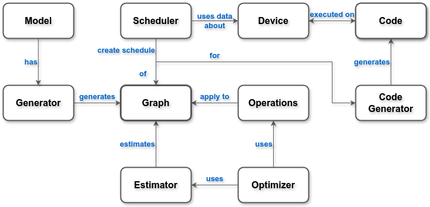

ComputableDAGs.jl
A domain-specific DAG-optimizer
General
This packages provides a way to represent large computations in a graph representation. Once such a graph is created, it can
- be analyzed to extract properties such as total compute effort or data transfer necessary,
- be optimized using optimization algorithms,
- be scheduled on heterogeneous machines, making use of all available hardware
- be compiled and executed within the same session of julia.
Requirements for use
There are some hard requirements for this to be possible to a specific computation problem:
- The computation must be static, i.e., the structure of the graph may not dynamically change during the computation.
- All data dependencies within the graph must be known in advance.
- The overall computation must be separable into smaller parts with less than total interdependency.
Some more soft requirements exist for the project to be useful:
- For optimizations to be effective, the functions should have a predictable compute effort that can be known in advance.
- The individual tasks should not be too small (ideally at least a few dozen FLOPs) because the compiler is smarter at optimizing very small functions than we can be.
- The individual tasks should not be too large so the graph has a large enough number of nodes to allow for a larger optimization space.
- Tasks should not have side-effects because the order and number of times a function is executed can not be relied upon.
Overview of the Project Structure

The project consists of several parts that are designed to be mostly orthogonal interfaces, extendable with new implementations without having to change other parts of the code. For example implementations, refer to the manual, the tests, or other projects in the ComputableDAGs project.
The Graph is the central part. It consists of Nodes and Edges. Nodes represent a Task, which is either a computation or a data transfer. Edges purely represent the dependencies between the nodes.
A graph has to be generated first, which is done by defining a Model and providing some form of Generator for a specific problem instance of that model. This part is entirely up to the user. A generator might parse a file and generate a graph from that, or it may generate a basic graph by itself.
Estimators can be used to collect properties of the graph, for example the total compute effort defined by tasks.
From any state of the graph, possible Operations can be generated. These represent topological changes to the graph which do not change the total computation. Operations can be applied and popped similar to a stack.
The Optimizer interface then allows to use an estimator to push and pop operations to reduce the execution time.
Finally, the Scheduler can use Device information to generate the code.
For detailed information on all the interfaces und functionality provided, please refer to the public documentation or the respective internals, as linked above.